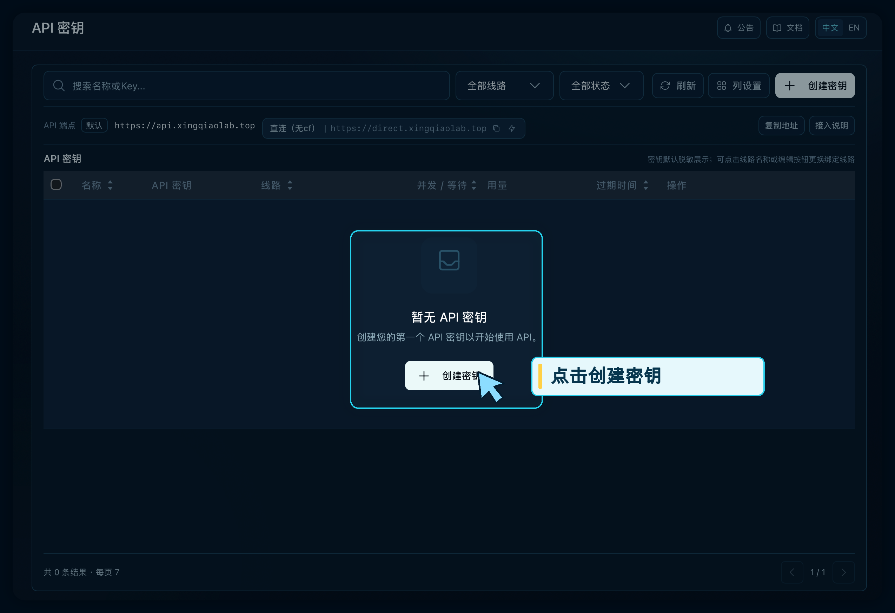
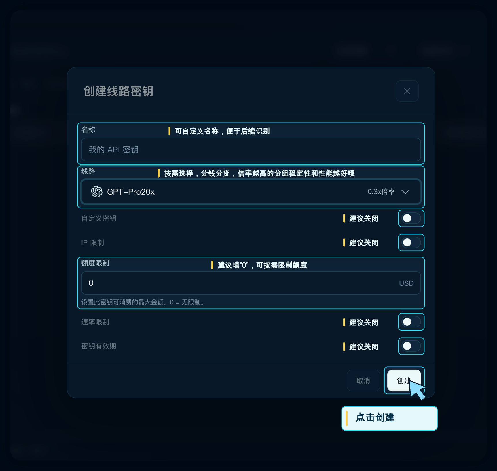
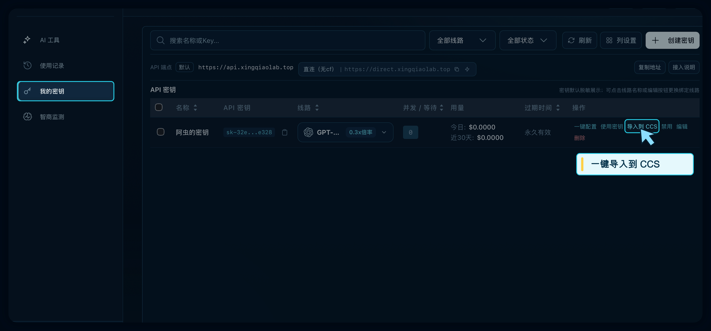
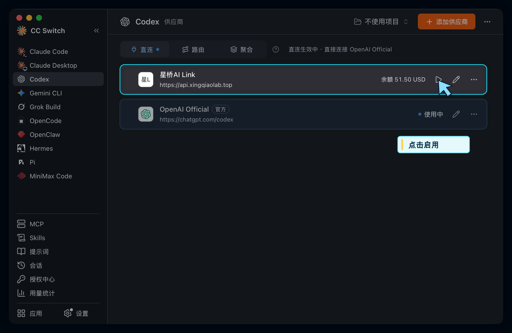
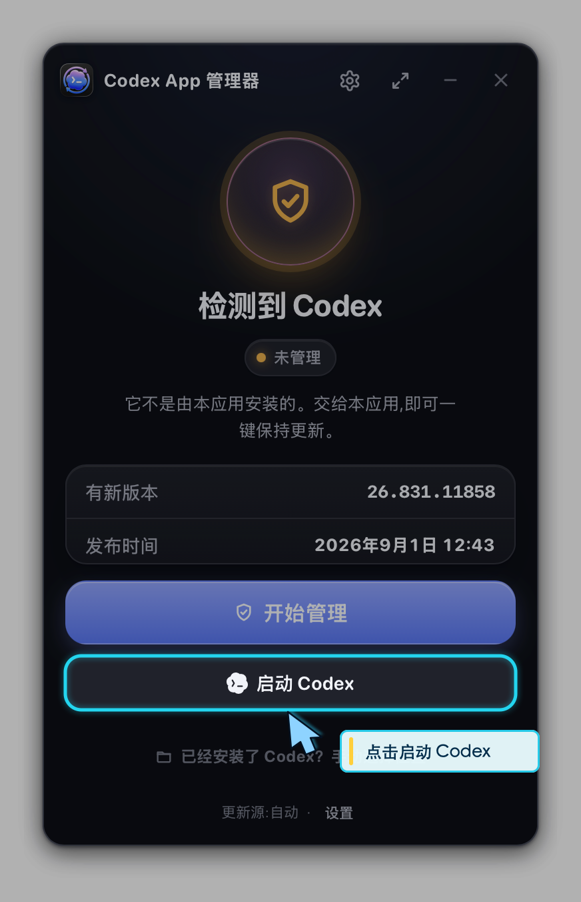
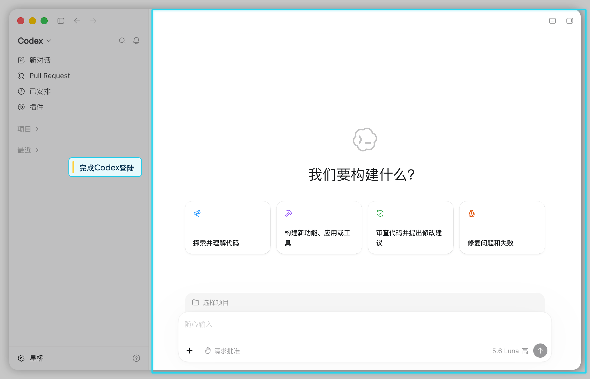
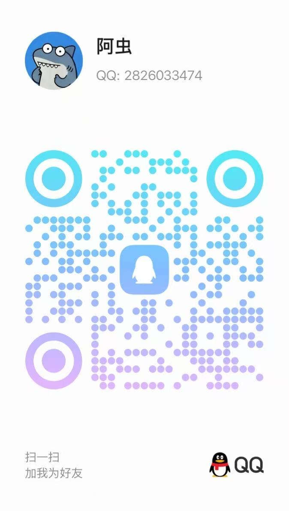
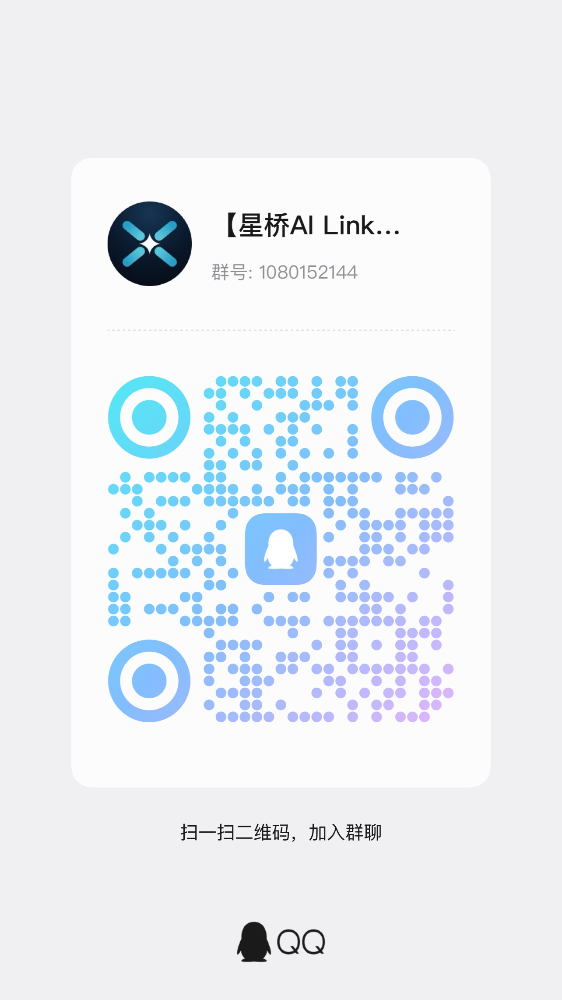

01
STARLINK FUTURE · CODEX
星桥 AI Link｜10分钟 Codex 新手教程
本教程旨在帮助新手完成 Codex 的安装、配置和首次测试。
02
STEP 02
二、安装 CC Switch
操作步骤
安装 CC Switch
官方下载
前往 CC Switch 官网根据你的电脑系统选择最新安装包。打开官网 ↗重要提醒
安装完成后：保持CC Switch打开
03
STEP 03
三、创建 API 密钥
操作步骤
密钥页面入口：https://api.xingqiaolab.top/keys
打开密钥页面并创建密钥，按页面提示完成填写。
对应截图


重要提醒
API 密钥关联您的账户额度，请勿泄露或转发给他人。密钥一旦被他人使用，可能导致您的额度被消耗。
04
STEP 04
四、一键导入 CC Switch
操作步骤
在密钥列表中点击「导入到 CCS」。
对应截图

一键导入没反应怎么办？
确认 CC Switch 已安装并正在运行；换 Safari、Chrome 或 Edge 再点击一次「导入到 CCS」。
05
STEP 05
五、启用星桥 AI Link
操作步骤
在 CC Switch 的 Codex 栏目中找到星桥 AI Link，点击启用，确认显示为“使用中”。
对应截图

06
STEP 06
六、安装 Codex 并启用
操作步骤
根据你的电脑系统下载安装 Codex并启用。
如果 Codex 已经打开，请先完全退出，再重新打开，让配置生效。
安装入口
前往 Codex 下载页面打开下载页 ↗对应截图


仍出现登录页面怎么办？
确认 CC Switch 已更新到最新版，并在 Codex 栏目中重新启用星桥 AI Link；完全退出 Codex 后再打开。若仍无法进入，请联系客服，提供系统、Codex 和 CC Switch 版本及页面截图，截图请勿包含密钥。
07
STEP 07
七、完成首次测试
操作步骤
发送一条简单消息，例如“你好，请介绍一下你能做什么”，确认能够正常收到回复。
对应截图

重要提醒
测试额度用完后，如果觉得还不错，可前往星桥 AI Link 充值继续使用哦。
ALL SET · STARLINK FUTURE
🎉 到这里，你已经完成啦！
恭喜你完成 Codex 的安装、配置与首次测试！
从现在开始，
你可以把更多时间留给真正重要的事情——
把任务交给 Codex，剩下的交给它慢慢折腾。 😎
NEED HELP?
遇到问题？别怕，有我在！
如果你在安装或使用 Codex的过程中遇到任何问题，
欢迎随时联系客服 QQ：2826033474。
有问题就来问，不用自己研究半天。

JOIN THE COMMUNITY
🌟 加入星桥 AI Link 官方交流群
欢迎加入星桥 AI Link 官方交流群！
- 交流 Codex 使用经验
- 获取使用帮助
- 了解星桥 AI Link 最新动态
- 不定期掉落一些小福利 🎁
